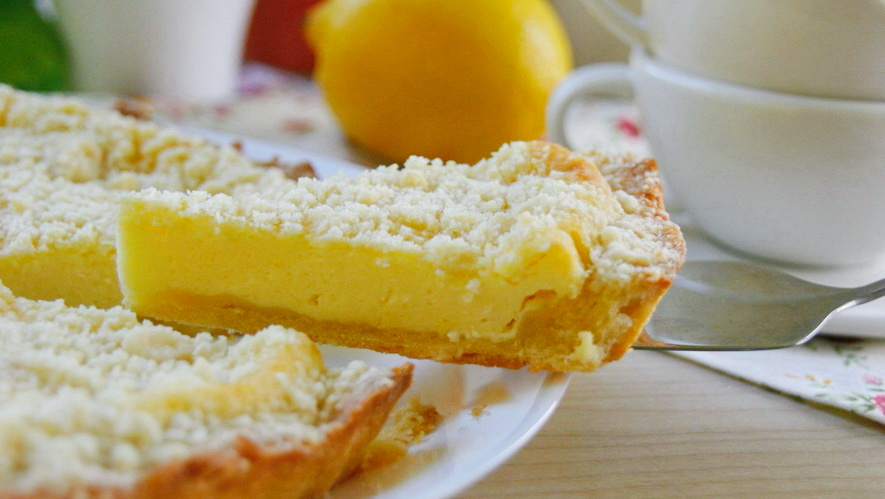

Народная музыка
В шесть лет меня отдали петь в народный фольклорный ансамбль. С тех пор я занималась сольфеджио, игрой на фортепиано, музыкальной литературой, но самым интересным для меня оставалось пение в ансамбле. Изучая песни разных народов России я узнавала много нового не толко про музыку, но и про обычаи и традиции предков. Очень интересным в детстве для меня было узнавать от моей преподавательницы о языческих богах и обрядах, которые люди проводили для них. Мне очень нравилось петь псени, созданные для этих обрядов. Много лет назад мы пели песню посвященную богине судьбы Mокошь
Ингридиенты:
- творог 200гр
- мука 150гр
- сахар 50гр
- яйцо 1шт
- разрыхлитель 5гр
- соль 1щп
Приятного аппетита!